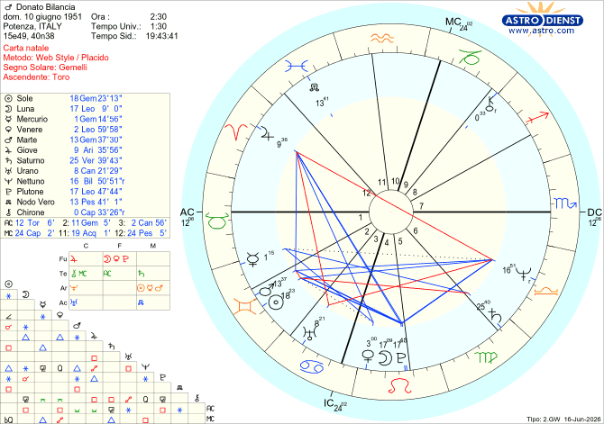

Il cielo racconta
Donato Bilancia
Potenza, 10 giugno 1951
TEMA NATALE DI DONATO BILANCIA
Nato a Potenza il 10/06/1951 alle ore 2:30
Gemelli ascendente Toro

Donato Bilancia: il Serial Killer dei Treni
Diciassette vittime in soli sei mesi. Tra il 1997 e il 1998, l'Italia intera sprofondò nel terrore più totale. Chiunque poteva essere il prossimo: una guardia giurata, una prostituta, un benzinaio o un passeggero su un treno. Non c'era una logica, non c'era un movente apparente.
A stringere la Liguria in una morsa di sangue fu Donato Bilancia, un uomo di 46 anni fino ad allora conosciuto solo come un ladro elegante e un giocatore d'azzardo nelle bische clandestine. Cosa ha trasformato un uomo di mezza età in una spietata macchina da guerra? La criminologia ha brancolato nel buio per mesi, ma la mappa del suo cielo natale conteneva già la formula esatta di questa follia.
1. L'inganno del cielo sereno: il veleno silenzioso
A prima vista, il Tema Natale di Donato Bilancia sembra quasi perfetto: niente campi di battaglia, pochissimi aspetti negativi. Ma come insegnava la grande astrologa Lisa Morpurgo, l'assenza di quadrature non è sinonimo di felicità. Anzi. Quando le energie planetarie non trovano una valvola di sfogo, fermentano nel buio fino a esplodere.
La firma delle stelle
2. Il dramma del "Maschio Alfa" fallito
Nel profondo della sua psiche si agitava un conflitto lacerante sul senso della sua virilità.
Bilancia aveva la congiunzione Sole-Marte (l'archetipo del guerriero, del maschio dominante) che però riceveva un trigono da Nettuno. Questo aspetto addolciva la sua parte maschile, creando dubbi ossessivi e paranoie sulla sua virilità.
A peggiorare le cose c'era l'Ascendente Toro (segno femminile che simbolicamente rappresenta il matriarcato) e Mercurio in Gemelli e in Prima Casa: l'identità di un eterno adolescente bisognoso di approvazione, che cercava di comprare l'affetto degli amici pagando cene a tutti e sfoggiando un lusso sfarzoso (Venere in Leone in Quarta Casa sestile a Mercurio in prima Casa). Nel corpo di un quarantenne viveva un ragazzo insicuro, ossessionato dall'idea di essere un "fallito".
3. L'artigiano del crimine: Hermes e Saturno
Prima di diventare un assassino, Bilancia era un ladro straordinario. Pianificava i colpi per settimane, studiando casseforti e serrature come un ingegnere.
La precisione da brividi:
La congiunzione Sole-Marte in Seconda Casa (i soldi) in trigono a Nettuno in Bilancia in Sesta (il lavoro) creava il profilo perfetto del ladro gentiluomo: guadagni illegali ottenuti con l'astuzia, mimetizzandosi tra i ricchi grazie ad abiti elegantissimi. Un altro aspetto che conferma che il denaro proveniva da fonti diverse rispetto alla norma è quello di Giove in Ariete in XII Casa al quadrato di Urano in Cancro in III Casa (violazione della libertà nella sfera privata e intima degli altri).
4. L'ossessione del sesso e l'umiliazione dell'infanzia
Il rapporto di Bilancia con il femminile era distorto. Aveva la Luna congiunta a Plutone in Quinta Casa: per lui la donna era una creatura schiacciante, dotata di un potere sessuale immenso e poiché riceve un sestile da Nettuno in Bilancia, è anche giudicante.
Nettuno in Bilancia in Sesta Casa trigono alla congiunzione Sole-Marte rifletteva un'ossessione psicosomatica drammatica : Bilancia percepiva il proprio fallo come minuscolo, inadeguato. Ogni volta che finiva un rapporto con una donna, temeva il suo giudizio, la sua risata.
Il colpo di scena psicologico:
5. Il crollo del castello e la vendetta cieca
Nel 1997, il trauma del tradimento riapre la ferita. Bilancia scopre che quello che considerava il suo migliore amico lo stava truffando al tavolo da gioco, ridendo di lui alle sue spalle. L'identità di Donato si azzera. La depressione si trasforma in una furia cieca.
È in questo momento che scatta la trappola di Giove intercercettato leso in Ariete in Dodicesima Casa (la rabbia accumulata nell'inconscio) quadrato a Urano in Cancro in Terza Casa (l’opportunismo degli altri che ferisce i propri sentimenti). Ed è sempre in questo aspetto che possiamo rintracciare gli altri fatti dolorosi della sua vita come ad esempio:
nel 1987, anno in cui suo fratello si era suicidato gettandosi sotto un treno con il nipotino in braccio.
6. Il tradimento dei Gemelli
Ironia della sorte, un criminale così metodico (Saturno in Vergine) fu catturato per una leggerezza tipicamente Gemelli (la superficialità nel gestire i dettagli quotidiani): la polizia lo rintracciò perché non aveva pagato i pedaggi autostradali e il conto del carrozziere per la sua Mercedes nera utilizzata durante i delitti.
7. Salva grazie alla sua bambina
Ma nel buio della sua mente, una notte successe una cosa straordinaria. Bilancia era pronto a uccidere l'ennesima prostituta. La donna, terrorizzata, urlò che a casa c'era una bambina che la stava aspettando. E Bilancia si fermò.
Attraverso la nebbia della follia, l'assassino vide l'unica cosa sacra che gli era rimasta: quel bambino ferito e mai protetto che piangeva ancora dentro di lui. Fermando la mano, per un solo istante, Donato Bilancia decise di fare al mondo l'unico regalo che nessuno aveva mai fatto a lui: proteggere l'innocenza.
8. Il dettaglio finale che mi lascia senza parole
Se c'è una cosa che mi riempie di stupore e mi fa riflettere in questo Tema Natale, è vedere la concentrazione spaventosa di simboli racchiusi in quell'unica, apparentemente innocua quadratura tra Giove in Ariete in Dodicesima Casa e Urano in Cancro in Terza Casa. È incredibile come in questo solo aspetto sia condensata quasi l'intera trama della sua tragica esistenza: le umiliazioni subite da bambino nella sfera intima con i parenti (Urano in Cancro in III Casa), le perdite colossali al gioco e i falsi amici che lo hanno usato a loro vantaggio, fino al dramma del fratello e del nipotino morti sotto un treno (la Terza Casa simboleggia i mezzi di trasporto, i piccoli spostamenti, i cugini, i fratelli).
Ma il vero colpo di scena che lascia sbalorditi è la natura profonda dei due pianeti coinvolti: Giove è il governatore della sua Ottava Casa (la morte), mentre Urano governa la sua Undicesima Casa (l'equilibrio). Non è eccezionale, quasi da brividi? L'aspetto che alla fine ha fatto scattare la sua furia omicida, disintegrando la sua vita, mette in contatto diretto proprio il governatore della morte con quello che regola il suo equilibrio psichico.
🌟 Il verdetto delle stelle
Il caso di Donato Bilancia è la dimostrazione più spietata di come un tema natale apparentemente pacifico possa nascondere dinamiche devastanti. I pianeti avevano tracciato la mappa di una mente brillante ma disintegrata dall'umiliazione. Come disse lo psichiatra Vittorino Andreoli, uccidendo diciassette persone, Bilancia stava solo cercando disperatamente di uccidere sé stesso.